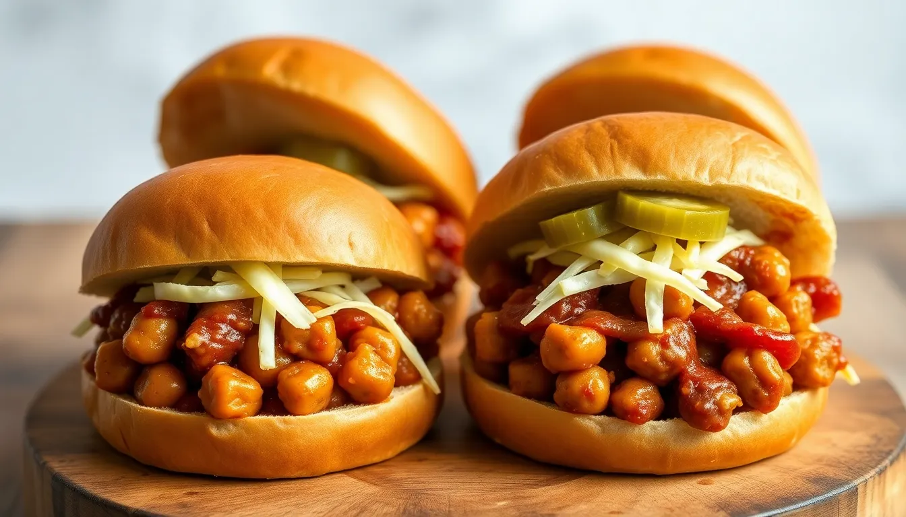

BBQ Chickpea Sandwiches
Prep time: 10 minutes - Cook time: 15 minutes - Total time: 25 minutes
Estimated total cost: $11.80 - Estimated cost per serving: $2.95 - Serves: 4

Ingredients
- 2 cans chickpeas, drained and rinsed — $2.00
- 4 sandwich buns — $2.00
- 1 small onion, diced — $0.80
- 1 tablespoon oil — $0.20
- 3/4 cup barbecue sauce — $1.50
- 1 teaspoon mustard — $0.05
- 1/2 teaspoon garlic powder — $0.05
- 1/4 teaspoon black pepper — $0.05
- Optional: shredded cabbage or pickles — $0.80
Estimated ingredient total: $7.45 to $8.25
Displayed planning estimate: $11.80
Detailed Instructions
- Drain and rinse the chickpeas well.
- Add them to a bowl and lightly mash about half with a fork so the filling has a better sandwich texture.
- Dice the onion.
- Heat the oil in a skillet over medium heat.
- Add the onion and cook for 4 to 5 minutes until softened.
- Add the chickpeas, barbecue sauce, mustard, garlic powder, and black pepper.
- Stir well and cook for 5 to 6 minutes until hot and slightly thickened.
- Taste and add more barbecue sauce if you want a saucier mixture.
- Toast the buns if desired.
- Spoon the chickpea mixture onto the buns.
- Add optional shredded cabbage or pickles and serve warm.
Helpful Notes
- This is a very easy weeknight sandwich recipe.
- Coleslaw-style cabbage makes a nice crunchy topping.
- Leftovers work well in wraps too.
Price Note
Ingredient prices can vary by store, brand, and region, so these are planning estimates rather than exact totals.